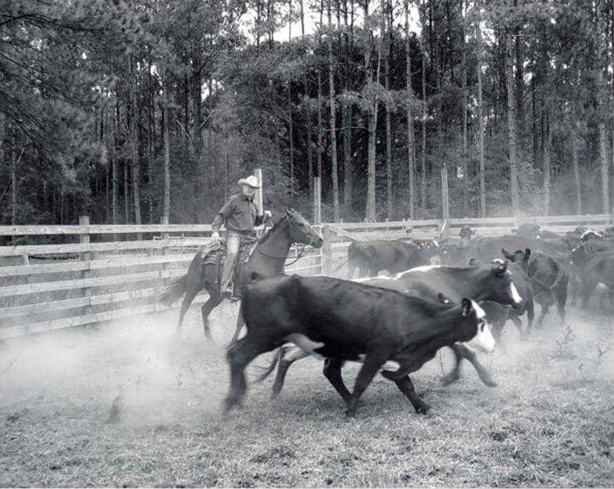
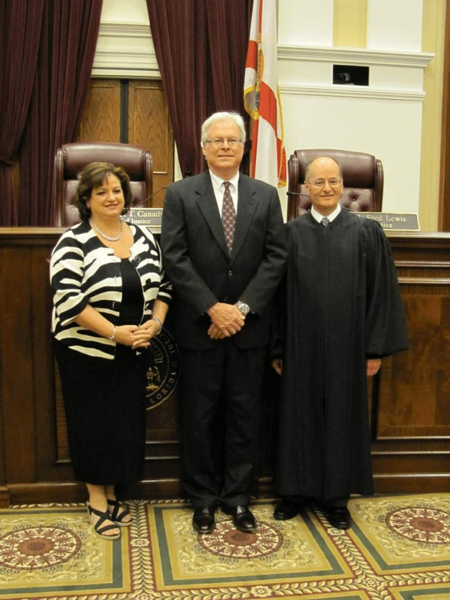
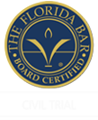

Daniel L.
Hightower
Before making Ocala his home, Daniel L. Hightower was born and raised in Lakeland, Polk County, Florida. After graduating from Lakeland High School, he attended Stetson University in DeLand where he earned a B.A. degree in history. He then continued his education at Stetson Law School in St. Petersburg, where he went on to earn his Juris Doctorate degree. While there, he was elected as a Justice to the Honor Court and appointed to the Stetson Law Review Board.
After graduating from Stetson University College of Law, Mr. Hightower and his wife moved to Ocala in 1973. Here, he joined the Green, Simmons, & Green Law Firm, working one year as a part-time Assistant State Attorney, prosecuting felony crimes. After fourteen years with the same firm, Mr. Hightower started his own law firm in 1987, Daniel L. Hightower, P.A., focusing on Personal Injury, Wrongful Death and Workers' Compensation cases.
Mr. Hightower has been fervently fighting for his clients' legal rights and remedies since his admission as a lawyer in October of 1973. Over the last 50 years, he has received countless service awards and recognitions for his contributions to the Ocala/Marion County community and beyond.

In his spare time, Mr. Hightower enjoys spending time with his family and friends. He is also a cattle rancher and owns the HT Ranch near Blitchton, Florida, a working ranch that raises beef cattle and hay. Mr. Hightower takes an active role in the ranch operations including penning and working cattle and cutting and baling hay. Mr. Hightower says, "I may be a lawyer but I still have calluses on my hands."

This picture is of Daniel L. Hightower with Florida Bar President, Mayanne Downs (left) and Chief Justice of Florida Supreme Court, Charles Canady (right), at the Florida Supreme Court, receiving the Florida Bar President's Pro Bono Service Award in 2011 for legal services provided to people who are unable to afford a lawyer.
HONORS & AWARDS
